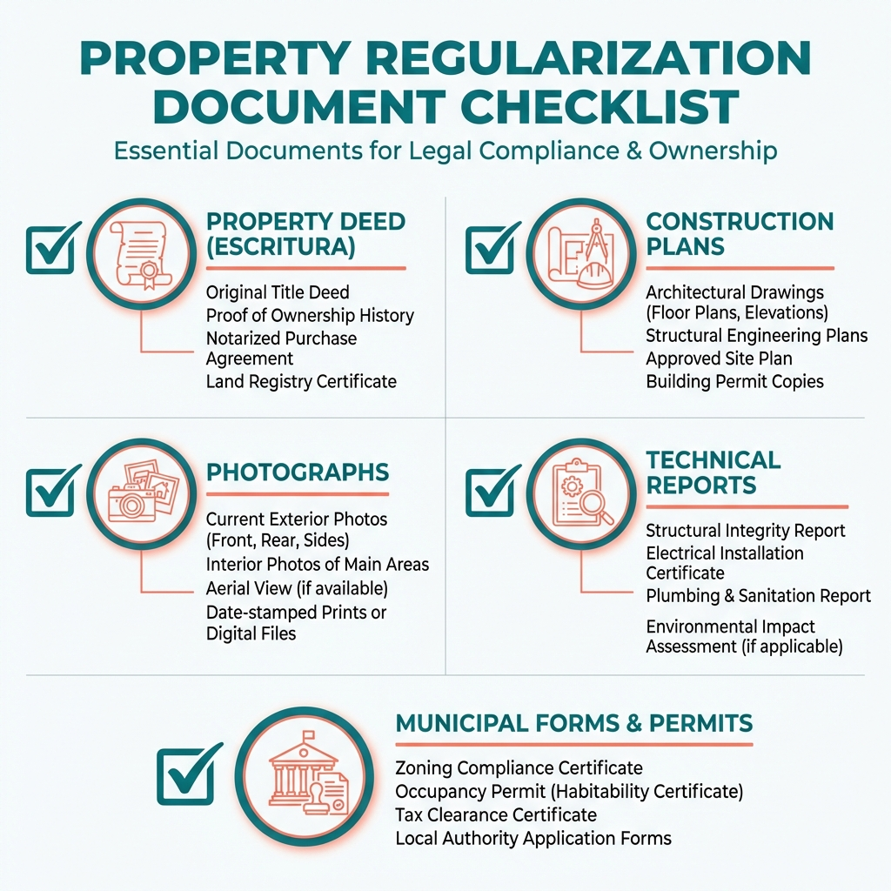

Si estás comprando, vendiendo o regularizando una propiedad, tarde o temprano te pedirán el famoso "Certificado de Deslindes". Sin embargo, solicitarlo puede ser un dolor de cabeza dependiendo de la comuna donde vivas. Descubre por qué sucede esto y cómo obtenerlo correctamente.
Contenido del artículo
¿Qué es el Certificado de Deslindes?
El Certificado de Deslindes es un documento oficial emitido por el Conservador de Bienes Raíces (CBR) correspondiente, que describe con precisión los límites (deslindes) de un sitio o propiedad según consta en su inscripción de dominio.
A diferencia del Certificado de Dominio Vigente (que dice quién es el dueño) o el de Gravámenes (que dice si hay deudas), el de deslindes se enfoca puramente en la "forma" y los "vecinos" del terreno. Indica quién está al Norte, al Sur, al Oriente y al Poniente, y qué longitud tiene cada tramo.
¿Para qué sirve realmente?
No es un trámite que se pida todos los días, pero es crítico en situaciones específicas:
- Tasaciones Bancarias: Los bancos lo exigen para verificar que la propiedad que están hipotecando coincide exactamente con los planos.
- Regularizaciones (DOM): Para trámites municipales o de la Dirección de Obras, es necesario acreditar los límites legales del terreno.
- Conflictos con Vecinos: Si hay dudas sobre dónde termina un patio o empieza el otro, este certificado es la base legal para un levantamiento topográfico.
- Venta de Terrenos: Proporciona seguridad al comprador sobre las dimensiones reales del bien que adquiere.
¿Cómo se solicita?
Actualmente, la mayoría de los CBR permiten la solicitud online a través de su página web. El proceso general es:
- Ingresar al sitio web del CBR (ej: conservador.cl para Santiago).
- Acceder a la sección de "Trámites en Línea" o "Solicitud de Certificados".
- Identificar la propiedad mediante su Foja, Número y Año de inscripción.
- Seleccionar "Certificado de Deslindes".
- Pagar el arancel (que suele rondar entre $5.000 y $12.000 según el CBR).
⚠️ Aquí es donde se complica la historia...
Aunque el trámite suena estándar, la realidad es que no todos los Conservadores operan igual. Aquí entra en juego la experiencia profesional técnica.
El dilema de los CBR: San Bernardo vs Santiago
Como profesionales, nos encontramos con una curiosidad territorial: ¿Por qué en algunas comunas es tan fácil y en otras parece imposible?
Existen oficinas del Conservador de Bienes Raíces que tienen este certificado como un producto estandarizado. Por ejemplo:
📍 Caso de Éxito: San Bernardo y San Miguel
En el CBR de San Bernardo (que abarca San Bernardo, Calera de Tango y Paine) y el de San Miguel, el Certificado de Deslindes es un documento habitual. Tú lo pides, ellos revisan la matriz de la inscripción y te emiten un certificado independiente que dice: "Los deslindes son...".
Sin embargo, en la mayoría de los demás CBR de Chile (incluyendo el gran CBR de Santiago), este certificado individual NADA MÁS NO EXISTE como tal.
¿Por qué sucede esto?
Muchos Conservadores argumentan que los deslindes ya vienen escritos en la Inscripción de Dominio Vigente. Por lo tanto, no ven la necesidad de emitir un papel aparte que diga lo mismo. Si pides uno en Santiago, lo más probable es que te digan que "no se emite" o que debas pedir una copia de la inscripción completa.
¿Qué hacer si mi CBR no lo emite?
Si el banco o la municipalidad te exige el "Certificado de Deslindes" y tu Conservador te dice que no lo hace (como ocurre en la mayoría de los casos fuera de San Bernardo o San Miguel), tienes dos caminos:
- Copia con Vigencia Ampliada: Solicita una Copia de Dominio Vigente. En ella, siempre deben aparecer los deslindes. Los bancos suelen aceptar esto como prueba suficiente.
- Copia del Plano de Loteo: A veces los deslindes se entienden mejor adjuntando una copia del plano que está archivado en el CBR. Es un trámite aparte pero complementa la información legal.
¿Necesitas ayuda con estudios de títulos o regularizaciones?
En Estudio ROER conocemos las mañas de cada Conservador y Municipalidad de la Región Metropolitana. Déjanos los trámites pesados a nosotros.
Hablar con un arquitectoDato PRO: Antes de gastar dinero en certificados innecesarios, revisa tu escritura de compraventa. Ahí están los deslindes originales. Si necesitas algo oficial para un banco, confirma primero si aceptan la Copia de Dominio Vigente antes de intentar pedir un certificado de deslindes inexistente.